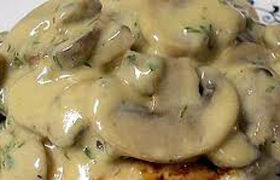
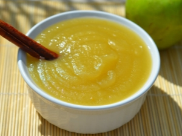
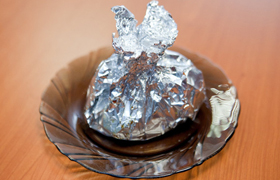
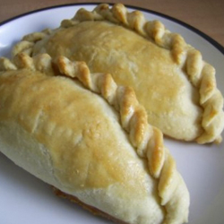
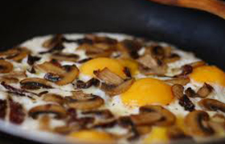
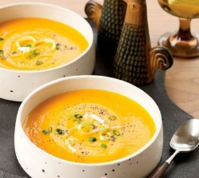
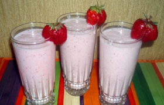

Supjaustyti svogūną, pakepinti, grybus išvirti, supjaustyti, viską sumaišyti ir patroškinti. Svieste pakepinti miltus, kol pagels, atskiesti šaltu sultiniu ir užvirti. Į pakepintus miltus sudėti grybus, pavirinti, po to supilti grietinę, petražoles ir užvirti.
Grybų padažas

Obuolių padažas

Obuolius nulupti, išimti sėklalizdžius ir supjaustyti griežinėliais. Į vandenį supilti cukrų ir obuolių griežinėlius. Pavirinti. Po to mediniu šaukštu išplakti iki standumo. Tiekti pašildytą.
Bulvės folijoje

Bulves išvirtas pasūdytame vandenyje suvyniokite į foliją ir kepkite ant grotelių 20-25 min. Susmulkintus svogūnus, česnaką, papriką ir pomidorus užpilkite pomidorų padažu, apibarstykite prieskoniais ir apšlakstykite aliejumi ir citrinų sultimis, išmaišykite. Supjaustytą kumpį kubeliais sumaišykite su grietine ir prieskoniais. Kai bulves iškeps, atvyniokite foliją, bulves įpjaukite ir išskobkite truputį minkštimo. Į gautą įdubą dėkite kumpį su grietine, ant viršaus - daržoves. Apibarstykite kapotais žalumunais.
Bulviniai kibinai

Virtas bulves gerai sutrinti arba sumalti, žalias sutarkuoti. Varškę išsukti su kiaušiniais, supilti grietinę, suberti prieskonius. Visus produktus suminkyti, miltų beriant tiek, kad tešla nebūtų labai kieta. Išjos daryti kibinus, aptepti plaktu kiaušiniu, kepti orkaitėje arba keptuvėje su riebalais. Iškepusius užpilti grietinės ir sviesto padažu.
Kiaušinienė su grybais

Grybus išmirkyti ir išvirti pasūdytame vandenyje, susmulkinti. Keptuvėje pakepinti miltus su sviestu. Kiaušinius išplakti, įpilti pieno, sudėti grybus. Kepti ant silpnos ugnies. Patiekti pabarsčius petražolių lapeliais.
Aguonų sriuba

Aguonas nuplykykite 2-3 kartus karštu vandeniu. Nupylus vandenį, aguonas sugrūskite grūstuve arba 2-3 kartus smulkiai permalkite mėsai malti skirta mašinėle. Paruoštas aguonas užpilkite šaltu virintu vandeniu. Išmaišę vandenį, nupilkite į kitą indą, o aguonas suvartokite kitur. Imant aguonų daugiau, pienas būna baltesnis ir tirštesnis. Į aguonų pieną suberkite cukrų ir gabalėlias supjaustytus riestainius. Sriubą ypač tinka valgyti vasarą.
Braškių kokteilis

Pieną su cukrumi užviriname ir atšaldome. Uogas ištriname per sietelį. Supilame pieną, grietinėlę, sultis ir viską išplakame. Išpilstome į taures.